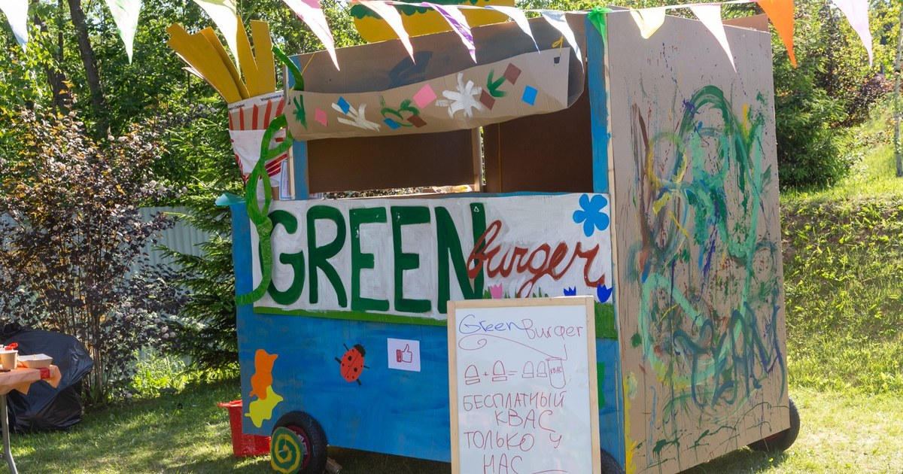
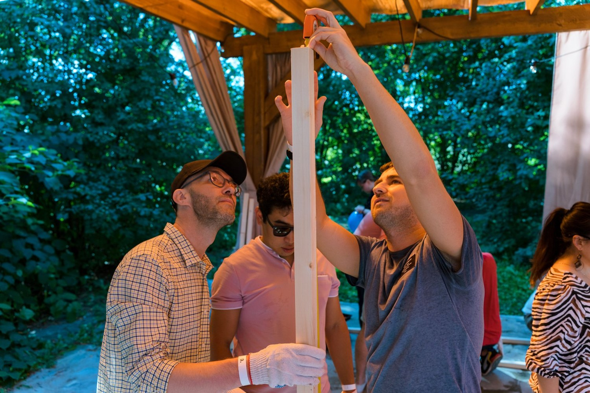
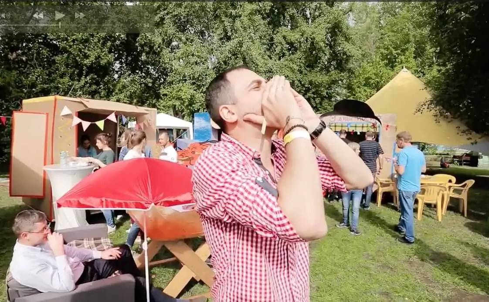
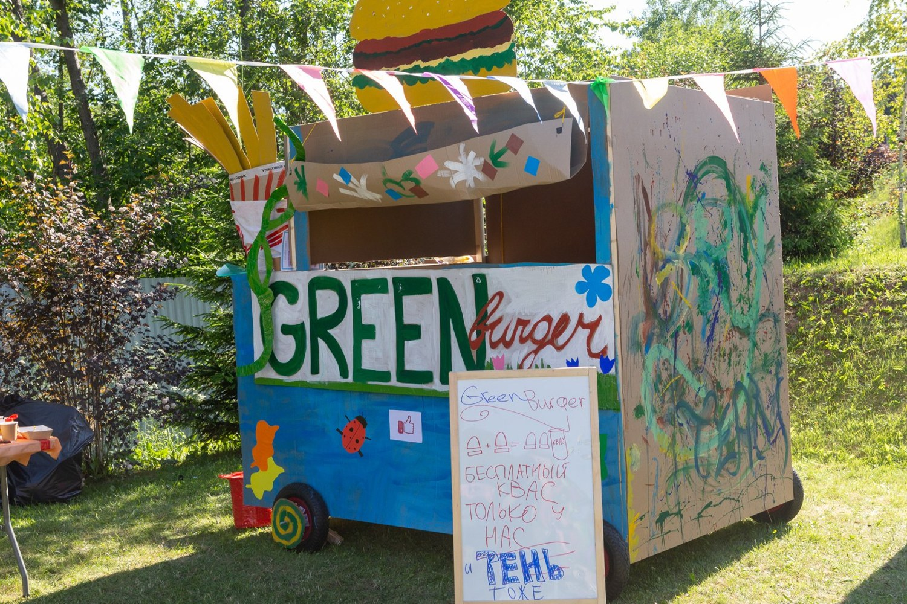
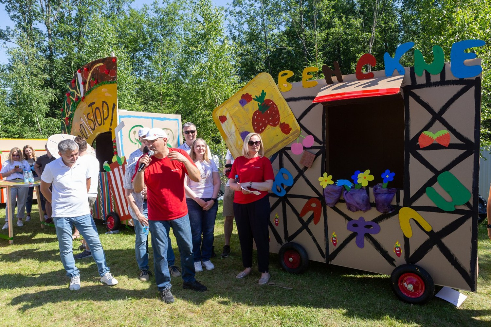
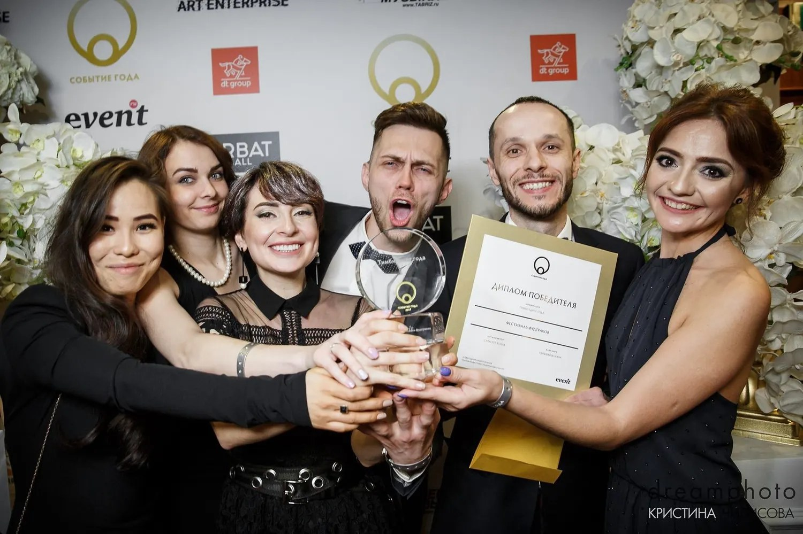

Заказчик просит четыре вещи сразу: чтобы понравилось сотрудникам, закрыло задачи руководителей, было новым и уложилось в бюджет. Обычно организатор выбирает две. Расскажу, как мы закрыли все четыре на проекте для «Райффайзенбанка».
Я Ирек Мансуров, исполнительный директор ивент-агентства Каталист. С 2010 года мы провели 4 800 проектов и получили 16 наград ивент-индустрии. «Фестиваль фудтраков» я придумал сам, поэтому рассказываю изнутри. Полный кейс с фото и видео лежит на сайте агентства Каталист.
Ко мне обратилась Юлия, помощник руководителя финансовой дирекции «Райффайзенбанка». Нужен ежегодный летний тимбилдинг для 350 участников на открытой площадке в Москве. Условия:
Я прикинул: четыре формата по отдельности не влезают в бюджет и растягиваются на 5-8 часов. Столько внимание не держится. Каждое условие решается легко, вместе они конфликтуют. Поэтому я искал один сюжет, в котором четыре формата работают одновременно.
Мозговой штурм ничего не дал: идеи выходили за бюджет или не учитывали чьи-то интересы. Решение пришло из внешней отрасли. Фестивали фудтраков постоянно проходят в Америке и Европе, а на корпоративные тимбилдинги их до нас никто не переносил. Фудтрак закрывает все четыре условия:
Правило для организатора: если бриф требует несколько форматов, ищите сюжет, где форматы стали ролями, а не этапами.
Команде нужно строить, рисовать, готовить, считать цены и продавать. Кто любит работать руками, строит. Кто умеет рисовать, оформляет. Кто не хочет ничего делать руками, придумывает ценообразование и стратегию.
В фестивале участвовали 350 человек, 20 команд по 17-18 человек. Каждую команду мы делили на две смены: пока одна готовит и продаёт, другая ходит по фестивалю и тратит игровые деньги, потом они меняются. Все попробовали разные роли.

Команды сами выбирали кухню: греческую, еврейскую, американскую, мексиканскую. Блюда тоже разные: бургеры, фалафель, панкейки, хот-доги. Участники построили 20 фудтраков и сами занялись ценообразованием, смотрели цены и рекламу конкурентов, привлекали покупателей. Вот что они делали сверх программы:


На 350 человек мелочей нет. Вот как мы решили основные задачи.
Еда для тех, кто не умеет готовить. Мы придумали простые рецепты уличных блюд, которые приготовит новичок. Командам выдали технологические карты, фотографии блюд и набор продуктов, а рядом работали повара и инструкторы.
Санитария. Продукты купили в день мероприятия, у каждого есть сертификат качества и соответствия. Из-за жары не брали быстропортящееся: свежую рыбу и грибы. Менеджеры проверили свежесть и сроки годности, овощи и фрукты помыли, все работали в перчатках.
Деньги. Мы ввели игровую валюту, поэтому участникам не пришлось тратить личные. Первый капитал команда получала за построенный фудтрак: 25 000 игровых рублей. Ещё 3 000 платили за самый яркий фудтрак по итогам голосования, чтобы строили круто, а не просто хорошо.
Чертежи и свобода. Командам выдали схемы с размерами деталей и референсы по дизайну. Жёсткое правило было одно: фудтрак ездит на колёсах, и внутри можно готовить. Всё остальное команды придумывали сами, и мы поощряли нестандартные решения.
Инструктор на команду. Он подсказывает по технике, следит за функциональностью фудтрака и техникой безопасности.
Проект назначили на 26 августа, на подготовку было три месяца. Площадку выбрали на Крылатских Холмах, Apple Hill: большая лужайка, вокруг природа, для вечерней программы поставили гигантский шатёр.

Участники подходили к нам во время фестиваля и признавались, что это лучший тимбилдинг, в котором они участвовали. Банк заказывал фестиваль ещё три раза. Победителя определили по прибыли: лучшей оказалась команда «Шалом», которая готовила фалафель.
С этим проектом мы пошли на премию «Событие года». В номинации «Тимбилдинг года» было 10 номинантов, на VI церемонии мы победили. Потом проект попал в шорт-лист премии «Золотой пазл», где его защищали очно перед жюри.

Честно о границах. Измеримых бизнес-показателей по этому проекту, вроде удержания или оценки вовлечённости до и после, в кейсе нет. И ещё: мы проводили фестиваль на открытой площадке летом. Для зимы или закрытого зала механику придётся пересчитывать, такого проекта я здесь не описываю.
Хитрость на десерт: определяйте победителя по цифре, а не по мнению жюри. Мы посчитали прибыль всех команд за время фестиваля. После награждения никто не спорит.
Если вы готовите корпоративные ивенты, программы и форматы собраны у нас на сайте.